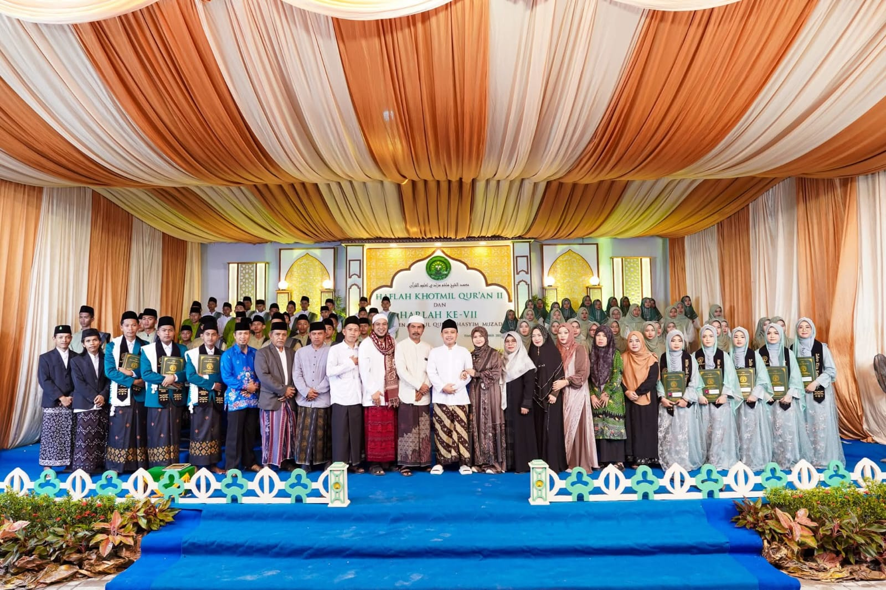

Kegiatan
Haflah Khitmil Qur'an II
Minggu, 5 Oktober 2025
Acara Haflah Khitmil Qur'an II dilaksanakan dengan khidmat, menghadirkan santri dan keluarga besar pesantren.

Kegiatan
Penyerahan Surat Keputusan (SK) UPZ Hasyim Muzadi
4 Mei 2026
UPZ Hasyim Muzadi resmi terbentuk di PPUQHM, Karang Senang SP.3 Timika. Penyerahan SK dilakukan langsung oleh Wakil Ketua 1 Bidang Pengumpulan BAZNAS Mimika, Ustadz H. Absir Budi Hamzah, SE., M.Pd.

Pengumuman
Penerimaan Santri Baru Tahun Ajaran 2026/2027 Resmi Dibuka
1 Maret 2026
PPUQHM membuka pendaftaran santri baru untuk Tahun Ajaran 2026/2027. Tersedia program tahfidz, kitab kuning, dan pendidikan formal SMP/SMA terakreditasi.